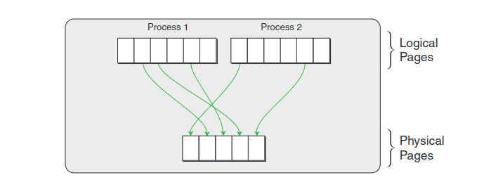
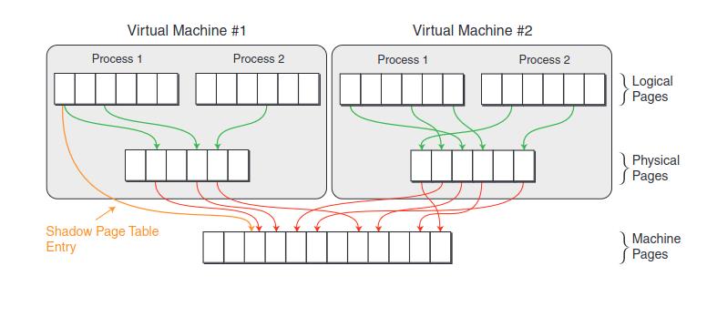

12/17/2023
MMU virtualization and shadow page tables
VMware's 2006 paper, "A Comparison of Software and Hardware Techniques for x86 Virtualization", described how
their early VMMs used a technique called shadow paging for MMU virtualization [2]. (
You can find my notes on that paper here).
While this technique was eclipsed by the introduction of hardware-assisted MMU virtualization (Intel Extended Page Tables and AMD's Nested Page Tables),
I think it's still an interesting topic, so I decided to dig into it a bit more
1.
On a non-virtualized system, the operating system and MMU work together to map logical page numbers (LPNs) to physical page numbers (PPNs).
The translation look aside buffer (TLB) stores the most recently used LPN to PPN mappings. The page tables which the MMU walks
to map a LPN to PPN are stored in memory, and the CR3 register contains the address of the top-level page table data struture.
The following picture, courtesy of VMware, shows how logical pages are mapped to physical pages in a native system:

[3]
On a virtualized system, things are different. Let's look at the following image:

[3]
We have three levels of memory: the guest virtual address space (logical pages), the guest physical address space (physical pages),
and the VMM's physical memory (machine pages).
To maintain isolation between VMs,
we can't allow the guest OS to modify the system's page tables.
Thus, the VMM must trap guest write accesses to the in-memory page table structures, and "trace" the effects of the page table update on a structure that the VMM maintains
per-guest VM, called the shadow page tables.
The shadow page tables map logical pages to machine pages. For each virtual machine, the VMM has to load
in the shadow tables for that VM, which involves updating the CPU's CR3 register. This is one of the costs involved in context switching
between VMs.
1. VMware showed that hardware-supported MMU virtualization improved performance over pure software MMU virtualization.
However, I'm unsure whether shadow paging was still useful for these architectures.↩
An example to show the interaction between shadow page tables, the guest VM, and the VMM
Let's walk through an example to get a better understanding of how the shadow page tables, the guest, and the VMM interact.
Let's imagine a scenario where a user application running on the guest OS allocated some memory through a library call like malloc.
When the user application on the guest tries accessing this memory for the first time, a page fault will occur. On native systems,
the OS's page fault handler would then allocate a page of physical memory and map it into the process's page tables. I describe how this works
in my blog post,
Linux Kernel demand paging: mapping anonymous memory into a user process's address space.
On a virtualized system, the VM's shadow page tables are in memory, and the present bit is initially set to 0 for each entry.
The page fault will trap to the VMM. The VMM will find the guest's page table entry for the faulting address.
If 'present = 0' on the guest page table entry, the page fault must be passed to the guest OS. This is a "true page fault", in that if the guest
was executing natively on the host, the page fault would still have occurred. The guest OS is responsible for handling this fault.
To handle true page faults, the VMM moves the trap info from the VMM's stack to the stack of the guest OS,
finds the interrupt handler for page faults in that guest's memory, switches the simulated mode to "privileged", and hands control back to the guest OS.
In our example, where the guest's user application is accessing newly allocated memory, the guest OS will allocate a physical page (traps to VMM, I think),
set the present bit in the guest page table entry,
and then return to user space (via iret, I think). This will trap back to the VMM. The VMM will see that the
guest has set its page table entry to 'present = 1' for the faulting address.
The VMM will then update its shadow page tables to map the faulting address to the machine page that was allocated for the process.
The next time the guest VM accesses this address, the VMM will not need to interfere, because the LPN to MPN mapping is already stored in the shadow page tables,
which are loaded for that VM.
Now, let's imagine an alternate scenario. The guest tried accessing a logical address, and the corresponding page table entry in the shadow
page table had 'present = 0', so a page fault occurs, and control transfers to the VMM. The VMM checks the guest page table entry, and sees that 'present = 1'. The guest OS
thinks that this address should have been in memory! This is a "hidden page fault". If the guest was natively executing on the host, then this
fault would not have occurred.
In this case, the VMM locates the corresponding physical page, and loads it into memory if needed. It then updates the shadow page table,
and returns to the guest, so the guest application can retry the reference. The page fault is made invisible to the guest.
[1]
Much of this example comes from John Ousterhout's notes on VMMs, which he posted as part of a class he teaches at Stanford.
Balancing hidden page faults and tracing overhead
Shadow paging is an optimization problem.
On one hand, you can trace every single guest page table access and update the shadow page tables. This ensures that the number of hidden
page faults is minimized.
However, trapping to the VMM to trace each page table update is expensive. To make virtualization as efficient as possible, you want to minimize
the number of traps to the VMM.
On the other hand, if you decided to not trace each page table update, then you're left with many hidden page faults, but you may have less
traps to the VMM overall.
Figuring out a policy to balance this trade-off is tricky, and VMware didn't elaborate on how they found such a balance. However,
hardware-assisted MMU virtualization helped minimize the cost of tracing page table updates, at the expense of more expensive TLB misses [3].
References
- [1] John Ousterhout, “Virtual Machine Monitors” Standard CS 140 Lecture notes, Sprint 2014. [Online]. Available: https://web.stanford.edu/~ouster/cgi-bin/cs140-spring14/lecture.php?topic=vmm. [Accessed: 17-Dec-2023].
- [2] K. Adams and O. Agesen, “A Comparison of Software and Hardware Techniques for x86
Virtualization,” [Online]. Available: https://www.vmware.com/pdf/asplos235_adams.pdf. [Accessed: 17-Dec-2023].
issue/30/
- [3] N. Bhatia, "Performance Evaluation of Intel EPT Hardware Assist". [Online]. Available: https://www.vmware.com/pdf/Perf_ESX_Intel-EPT-eval.pdf [Accessed: 17-Dec-2023].